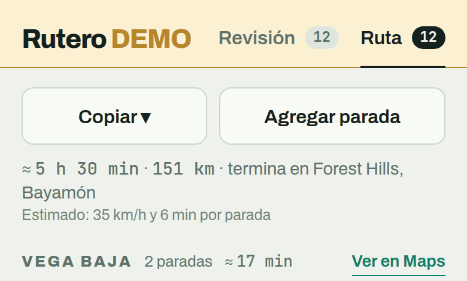

Rutero
- Geocodificación
- ArcGIS
- Logística
Pegas una lista de direcciones de Puerto Rico — incluso las difíciles, tipo “Carr. 159 Km. 0.7, Morovis” — o las tomas de una foto de factura o etiqueta con el botón “Sacar foto”; en esta demo pública esa foto devuelve facturas de prueba, así que aquí lo normal es probar con texto o la lista de ejemplo. Rutero normaliza las direcciones, las geocodifica y arma el orden de entrega por pueblo, con tiempo y distancia estimados y un botón para navegar en cada parada. Lo difícil no es el orden: es convertir una dirección puertorriqueña en un punto confiable.